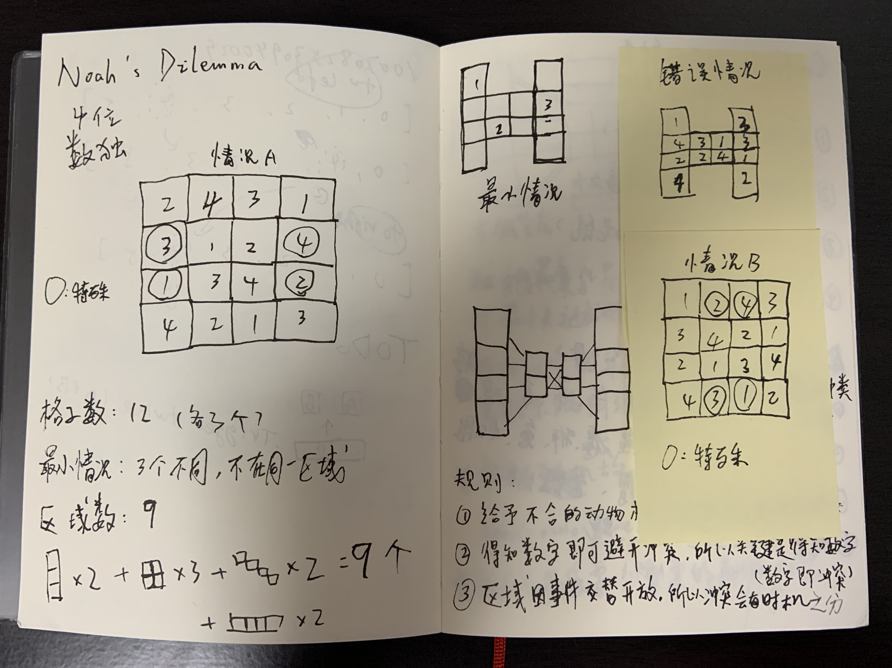
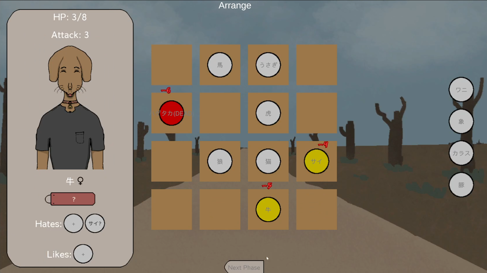
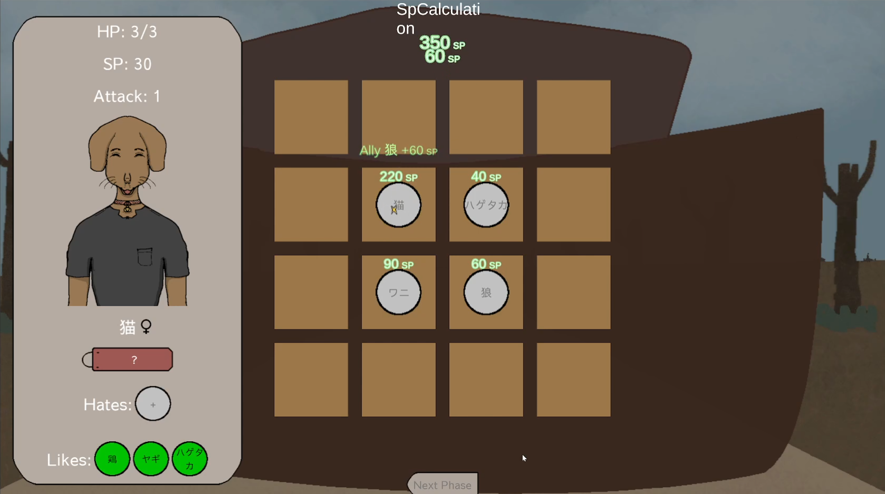
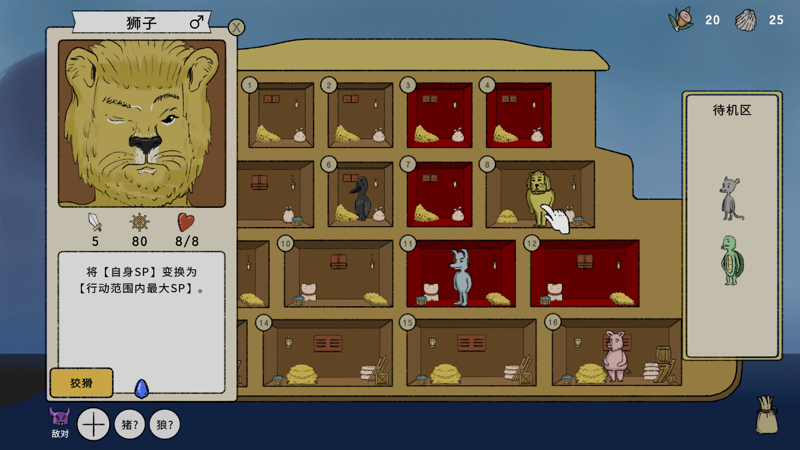
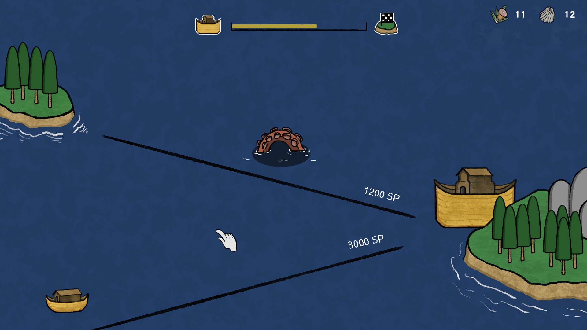
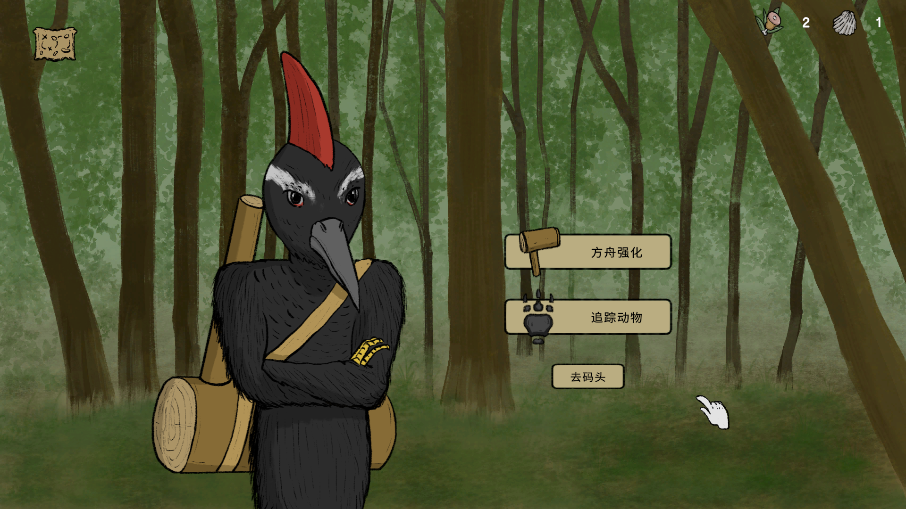

《诺亚的困境》开发日志#1：数独与方舟
如果说我的第一款独立游戏《空箱》诞生于最原始的创作冲动，那么我的第二款游戏《诺亚的困境》则是一个更为深思熟虑的决定。从最初的想法浮现到正式立项，跨越了将近3年的时间。
2021年：从数独到方舟，再到失败的原型
时间拉回到2021年，在《空箱》发售后的各项工作告一段落后，我终于有了时间来思考下一个游戏要做什么。但由于《空箱》是我人生中所做的第一个原型直接发展成了完整的游戏，我对于从“游戏想法”到“立项”的过程并不熟悉，而这造成的结果就是，我有很多想做的游戏，但是无法决定要做哪一个。我唯一确定的是，在刚刚结束了有着完整剧情的《空箱》的开发后，至少下一个游戏我想做一款不需要去考虑剧情的游戏。而在这个时候，《诺亚的困境》最初的想法已经出现。
当然我没有一开始就想要做一个基于“诺亚方舟”的游戏，我一开始想的是：“有什么游戏是没有剧情我也爱玩的？”排除掉超出我能力范围的大型游戏和暂时不想碰的3D游戏，我得到的答案是——数独。数独自然是没有剧情的，而除此之外，它也有许多我喜欢的特质，比如玩之前不需要任何心理建设，规则简单，可重复游玩，每一局都是独立的，有快速直接的正反馈等等。一款类似数独的游戏，既满足了没有剧情这一点，其随机生成的关卡甚至能让开发者自身也能享受到游戏。是不是越听越觉得这些特质熟悉？没错，虽然在2021年当时我没有发现，但是现在我明显感觉到数独作为游戏与roguelike存在不少相似点。没有仔细地去调查过，但说不定已经有人做过相关研究。
总之，基于上述的原因我开始从数独的规则开始去构思一款游戏。以下是我对当时思考过程的一个后期还原：
首先我希望这款游戏的规则要与数独类似，所以作为数独特点的方格填空结构应该要保留。其次它的规模需要足够小，小到我可以一个人把它完成。再者它需要看起来足够简单，最好简单到看一眼就能懂的程度。基于这几点，我决定先将9x9的数独方格压缩成4x4。
然后我便在4x4的方格上玩起了数独，随即发现按照数独的规则肯定会有4个方格的数字与周围的数字发生冲突。所以如果要化解这个冲突就必须引入新的规则，比如说这4个方格和别的方格不一样，数字放在这4个特殊的方格里就能够无视冲突。这么一来，一个方格也具有属性的数独变体游戏便出现了。同样的思路，放在数字身上也是一样的，即让某个数字具有无视规则的属性。

当时的笔记
顺着这个方向思考下去，数字与方格的形象也逐渐由抽象变得具体，再加上我也无意将这款游戏只做成抽象的解谜游戏，我开始思考一个与这种数独玩法相吻合的表现形式，于是便得到了“诺亚方舟”这个答案。“诺亚方舟”之所以深得我心，不仅是因为它和数独外型吻合，更是因为它的故事广为人知，知道这个故事的人直接就可以知道这个游戏是关于什么的，甚至知道目标是运送和拯救动物，而不需要我进行更多的解释。并且，目前市面上也没有一款足够成功的诺亚方舟主题游戏。
现在回过头去看2021年的游戏点子，很多仅仅只是一个模糊的概念，抑或只是一个想要讲诉的故事甚至只是一种想要抒发的情感，而《诺亚》则是从具体玩法出发的。也许这也是为什么最后是它被筛选出来进入了下一阶段，因为有具体玩法就能够很快地进行prototyping。
《诺亚》的第一个原型完成于2021年4月，当时的设计与数独原本的规则仍然非常接近，简单来说，就是每个动物都有自己讨厌的物种，当讨厌的物种住在自己附近的房间里时，到了夜晚两只动物就会互相攻击，玩家需要通过推理和移动动物来达成一个没有冲突的正确配置。这个最初的原型大概用了四天时间做完，做完后第一次试玩，房间里响起了我的苦笑——这个游戏实在太难了。

最初的原型
因为玩家并不知道动物讨厌谁，所以玩家需要不停地试错，试错也是这个设计下玩家所唯一能做的事情，而试错的结果，即使可以记笔记，也是不小的记忆负担。可以说，玩家不知道动物讨厌谁这个设计将数独规则明确的优点屏蔽了，好比是在要求玩家玩一个看不清数字是几的数独。而如果把动物之间的爱憎关系都事先挑明，那么这个游戏和数独又有什么区别呢？于是在这次试玩之后，我就把这个当时认为行不通的原型放到了一边，去忙别的东西去了。
2023年：金子需要等待，游戏需要设计
转眼2年半过去，在2023年11月，我也终于做出了辞职做独立游戏的决定，于是便重新回顾起了在过去这段时间里制作的几个游戏原型，想着到底要选择哪一款游戏，抑或是再构思一个新游戏来作为自己辞职后的第一个项目。这个时候，我又想起了《诺亚》。
我最喜爱和尊敬的独立游戏开发者Lucas Pope曾告诉我他是怎么从诸多游戏想法中去选择做哪一个的，那就是先放任不同的想法在脑海中相互竞争，看很长一段时间过去之后（比如说在做上一款游戏的同时）是哪一个想法最让他念念不忘，下一个就做哪一个。背后的逻辑是一般来说，只有最特别和最有魅力的想法才能经受住时间的考验。
所以，在原型做出来并不好玩的2年半之后我还惦记着《诺亚》这回事，让我又重新捡起了这个游戏——说不定《诺亚》的原型并不是不好玩，而只是游戏设计上出了问题。而假如能把它变得好玩，我相信《诺亚》有成功的潜力：它规模适中（能做完），主题类型足够大众但品相却独一无二（能卖），拥有steam玩家以及我自己喜爱的略带黑暗且方便延展的世界观（有意思）。
于是我便开始着手修改《诺亚》的游戏设计，很快就发现了问题所在。首先，我最初的设计完全是把它做成了一款解谜游戏，而解谜游戏的快感很大程度来自于“灵光一闪”和“过关斩将”的体验，而知道解题方法只缺重复试错的过程与“灵光一闪”相去甚远，若想营造“过关斩将”的体验则需要大量关卡，而大量关卡却与《诺亚》的世界观故事并不兼容。其次，最初的原型几乎没有正反馈，就算两只动物的爱憎关系推理正确或者位置摆放正确，在那个瞬间也没有任何值得高兴的点，如果要等到全部位置都猜对才有奖励，那么这个过程会变得十分难熬。
因此基于这两点，我对《诺亚》的游戏设计进行了大改：首先，它的定位应该是一款策略游戏，而非解谜游戏。其次，为了提供足够的正反馈我引入了航海力（SP）的概念，动物的位置摆放正确，就能获得更高的合计SP，而合计SP越高，船就能航行得越远，就能越快抵达目的地。这么一来，正反馈变得唾手可得——没有人不喜欢看着数字变得越来越大。除此之外，争取最高SP的玩法更是解放了一整个设计空间——类似自走棋追求最高战力，我可以加入各种强调“风险与收获”的道具和特殊效果，加入各种随机性，把每一次的挑战都变得独一无二。

引入航海力概念以提升正反馈
所以说，其实我并没有有意地去做一个roguelike游戏，而是在做一个类似数独的游戏时，发现最适合它的形态就是roguelike。这也解释了为什么现在市面上那么多roguelike游戏，有时候roguelike就是可以将一个游戏玩法盘活，而roguelike作为一种设计模式而非表现手法也使得万物皆可roguelike。
在如此修改完后，我又一次试玩了《诺亚》的原型，然后惊讶于不同的游戏设计居然真的能让一个游戏瞬间变得好玩——之前是脑子里知道，这次算是切身体会到了。之后就如大家所知，我选择了《诺亚》作为我的第二款独立游戏，并在辞职后全身心地投入到了它的开发中去。
2024年：新的旅程，心的旅程
在过去的3个月里，除了一直在做游戏内容，游戏外也有了一些里程碑式的进展：
①公开了《诺亚》的Steam商店页
为了积累愿望单，理论上Steam商店页是越早公开越好，但是在没有宣传片且商店素材未准备完全的情况下就公开好不好还有待检测，正好这次来观察一下。
②做了新的个人网站
为了最高效地达成“看起来不像模板”和“可用作博客”这两点，各番尝试之后新网站决定采用11ty+tailwind建站。与之前的Undercurrent Games网站不同，新网站强调个人的branding，还可以归档在国内平台写的东西，防止炸号。
③为《诺亚》报名了一个5月东京这边的小展会
过去几年里经历了大大小小数次出展之后，对于出展已经进入一种佛系状态，不过度期待也不过度准备，以收集真实的玩家反馈为主，宣传游戏为辅。
各方面的进度虽然在稳步推进，但与此同时心态却经常经历波动。除了日常刷社交媒体产生大量比较焦虑以外，之前辛苦准备的一个独立游戏比赛也落选了。虽然我猜落选的原因大概率是当时提出的demo完成度太低，但连安慰奖都没有让我不得不怀疑起了自己。当然，对自我的怀疑很快就被我连根拔起——看了一眼那个发行商发的游戏，只能说90%都是我不会玩的游戏，品味差异可见一斑。而且道理先放一边，我要是对自己的游戏都没有信心的话，我还辞职做个锤子的独立游戏。
当然这不是说我的游戏就一定好，只是说单凭比赛评委或是发行商少数人的评判就否定掉一款游戏的价值大可不必。这世界上有数以千万计的玩家，只要游戏能做完放出去，肯定会遇到喜欢它的人的，甚至比你能想象到的还要更喜欢——这是我在《空箱》发售后的切身体会。当然，从一个非常宏观的角度来看，nobody cares about my game也是事实，但至少作为开发者我得首先把它当回事，只有我把它当回事了，别人也才会把它当回事。接下来为了自己的心理健康，计划少看社交媒体，多发点自己的东西，把受到的怀疑转化成开发的动力，享受当下的每一天。嘿，有时候我还真会忘了现在每天只需要做自己游戏的日子就已经是我梦寐以求的了。
在这篇开发日志里我主要聊了一下《诺亚》从原型到立项的过程，下一篇开发日志会接着聊聊《诺亚》的美术和世界观，争取4月或更早发布。下面是几张新的（但不是最新的）游戏截图：



写开发日志一是为了记录整理，二是为了让更多的人知道《诺亚的困境》这款游戏的存在，如果你对这款游戏感兴趣，请务必将它加入Steam愿望单，这是现阶段对游戏最好的支持。
如果你想进一步支持我的创作，可以在Steam购买我的第一款独立游戏《空箱》，这也是我现阶段唯一的收入来源。感谢支持，感谢阅读，我们下期再见！
GP
2024.3.1
于日本藤泽